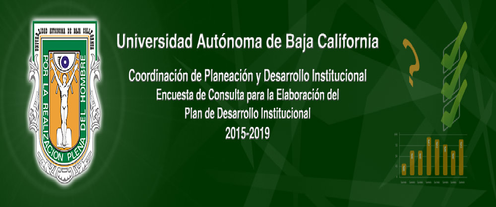
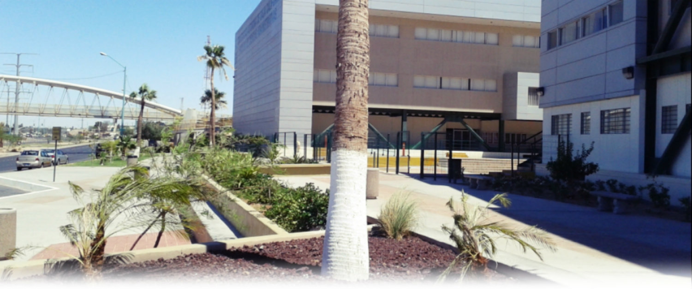
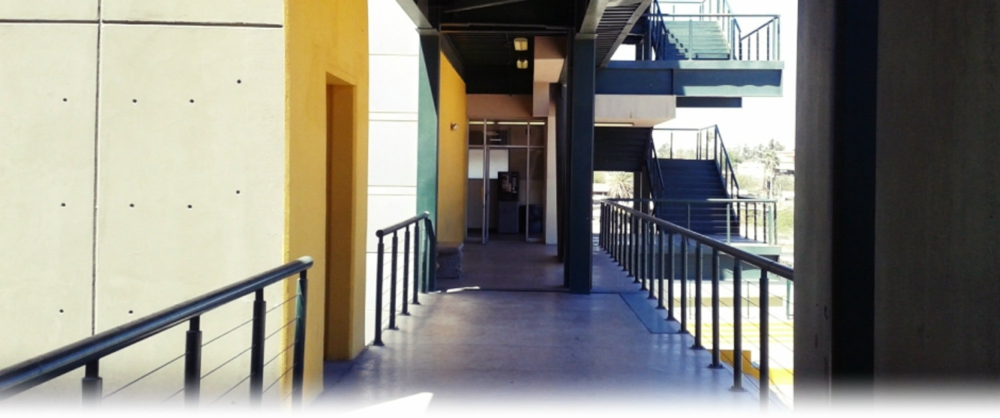
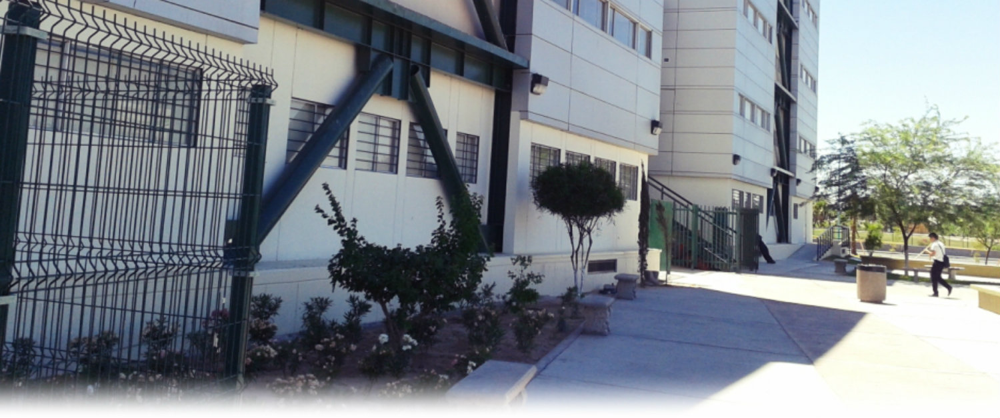
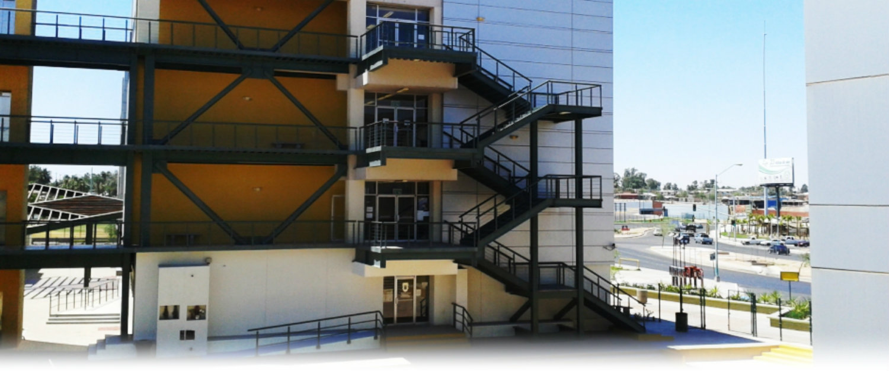
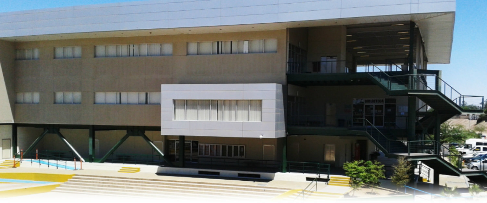

-

Plan de desarrollo institucional 2015
-

UABC una de las mejores universidades públicas del País
-

Orgullosamente cimarrón con valores!
-

Carreras acreditadas
-

Bienvenidos a nuestro sitio web cimarrones!
-

UABC una de las mejores universidades públicas del País
-
Facultad de Ciencias Administrativas UABC
Facultad de Ciencias Administrativas
La Facultad de Ciencias Administrativas de la Universidad Autónoma de Baja California busca ser un centro académico de excelencia en la formación de profesionales y en la generación de conocimientos vanguardistas en las ciencias administrativas y reconocido por su activa participación y la de sus egresados en el desarrollo de la sociedad.
*Eje Central Bulevar Río Nuevo S/N Colonia Agualeguas, 21330 Mexicali, Baja California. Tel. 01(686)582.3377
En este sitio encontrarás...
Toda la información referente a la vida estudiantil y docente en la UABC Facultad de Ciencias Administrativas Campus Mexicali. Información sobre periodos de inscripción, calendarios de examenes, cartas descriptivas, formatos de tutorías y demás elementos necesarios para el estudiante y docente cimarró
Este sitio está actualmente bajo contrucción. En el desafortunado caso de que alguna sección de su interés no se encuentre disponible aún puede visitar la vieja versión de la página dando clic en el siguiente botón: Ir a versión Anterior
UABC Radio 104.1FM
Anuncios
En esta sección podras ver los ultimos anuncios referentes a las diferentes actividades y tramites que se realizan en esta facultad.

.jpg)


-page-001.jpg){kind=link}
Copyright © 2015 Facultad de Ciencias Administrativas UABC. Todos los derechos reservados.
Diseñado por el departamento de sistematización y desarrollo FCA.